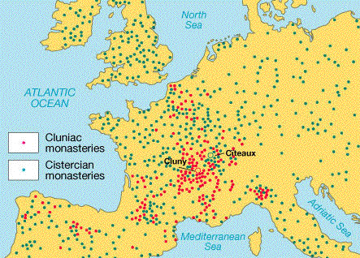

Debate:
Suger vs. Bernard of Clairvaux
Proposition:
Lavish works of art do not belong in monastic churches.
Medieval Worlds pp. 459-463 presents some basic background for
this
debate.
Background
presentations:
Team 1:
Who were Bernard and Suger?
Team 2:
What does Cistercian architecture look like?
What does Clunaic/Gothic architecture
look like? (Dr. Deliyannis can
bring in powerpoint with images if you let her know what images you
want).
Debate:
Team 1: argue for the Proposition
Team 2: argue against the Proposition
Primary source
evidence
The following two
texts lay out
Suger's and Bernard's positions.
Bernard of Clairvaux's Apology
Excerpts from Suger's De administratione
A description of the controversy can be found here, in the first part of the webpage (it might give you some ideas for discussion).
A good description of the Cistercian monastic order (Bernard's order) can be found here, with links to other materials.
Links to images of twelfth-century art and architecture
One of the best preserved early Cistercian monasteries, founded by Saint Bernard himself, is at Fontenay in France. Its official website is here. See especially the section "Architectural richness" for images with descriptions and dates.
The basilica of Saint-Denis, located just north of Paris, still stands. Suger's additions to the earlier church consist of the western towers and entrance portals, and the eastern choir and crypt. A website with many images can be found here. See especially "exterior sculpture", "interior choir", "windows", and "crypt capitals".
Of course, there was more to twelfth-century art and architecture than Fontenay and Saint-Denis. One church that has preserved a particularly good set of sculpture (of the sort that got Bernard hot under the collar) is Vezelay; you can see many images here (use the search function to search the word "capital" to get a lot of really fun stuff). Another church that has preserved many carved capitals from its cloister (this is the location that Bernard is talking about) is Moissac; images and description can be found here.
For the full impact of stained glass, the
cathedral of
Chartres (note: not a
monastic church) contains one of the best-preserved sets of its
original
glass. Click here
for a site with many images of stained glass and sculpture (note: to access this site, you will have to
use the username "student" and the password "medieval").

Map showing the location of Clunaic and
Cistercian
monasteries in Europe c. 1200-1300